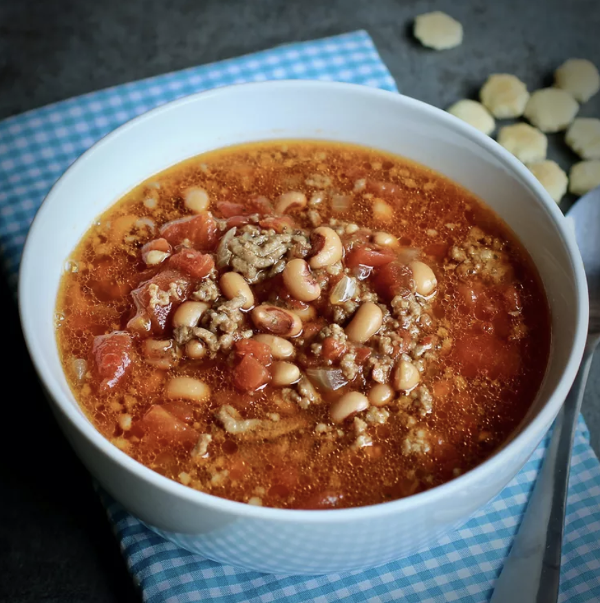

Black-Eyed Pea Soup

Description
This is a great New Year's meal! Perfect on a cold winter night. Great comfort food. Serve with corn bread.
Ingredients
- 1 pound bulk pork sausage
- 1 pound ground beef
- 1 large onion, diced
- 4 cups water
- 3 (15 ounce) cans black-eyed peas, drained
- 1 (28 ounce) can diced tomatoes
- ½ teaspoon salt
- ¼ teaspoon ground black pepper
- 4 beef bouillon cubes